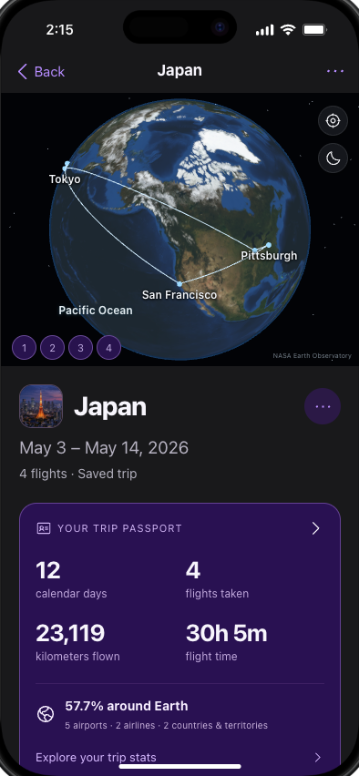
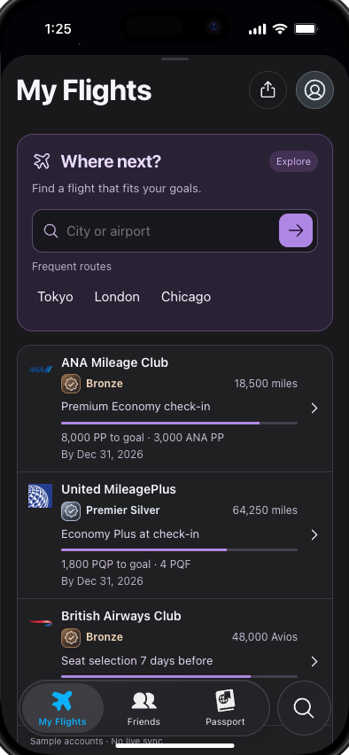
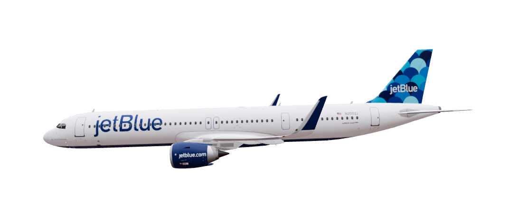

Airline apps · United & Delta examples
“Help me manage
this booking.”
Check in, access a boarding pass, change seats, track bags, and rebook with the airline.
United’s published capabilitiesTwo additions. A familiar Flighty.
Bringing your trips together. Making your next flight count.
An independent concept for the way frequent flyers travel.


Reviewed journeys, city thumbnails, and a Passport for every trip.
Explore Trips01 / Why Flighty
Flighty brings flight tracking, delay context, and personal flying history into one experience across airlines. Its appeal is making complex flight information feel understandable. [1]
Clear information helps a traveler
make the next decision.

The audience for this concept
I’m focusing on frequent flyers whose travel spans carriers, destinations, and loyalty programs.
Design target based on desk research; not a measured breakdown of Flighty’s customer base.
02 / Competitive context
An airline app helps you manage its booking. Flighty creates a consistent flight-information experience across carriers. Both can be useful on the same trip.
Airline apps · United & Delta examples
Check in, access a boarding pass, change seats, track bags, and rebook with the airline.
United’s published capabilitiesFlighty · Existing service
Flight status, inbound-aircraft context, and alerts presented in a consistent interface across carriers.
Flighty’s published capabilitiesAirline apps · Delta example
Delta already has a My Trips view for relevant trip information. A trip view itself is an established pattern.
Delta’s published capabilitiesFlighty · Existing service
Passport gathers flying history and statistics. This concept explores editable journey boundaries and easier retrieval within that record.
Flighty Passport contextAirline apps · Delta example
Delta shows SkyMiles status and earned or pending qualification progress. The airline remains the authority for its program.
Delta’s status trackerOur exploratory addition
Compare a future trip across carriers using your entered memberships and goals. Separate policy-based benefits, calculated earnings and illustrative fares.
Explore the proposed featureReward aggregation already exists: AwardWallet combines loyalty and itinerary information. The opportunity is making context useful inside a flight record people already maintain.
Evidence, with its limits
Selected public accounts help frame the problem. They don’t tell us how common it is.
12 qualitative accounts
Purposively selected desk research, not interviews. The grouping review below is already in this set. Rechecking it does not add a new participant.
PRD evidence ledger · page 5“I would love to be able to save individual trips.”
The reviewer wanted to find a three-day work block within a long flight list.
Aimee1980 · Jan 3, 2024Reports receiving diversion information before the airline updated its status. An individual experience, not a speed benchmark.
Sea000b · May 6, 2022Values consolidated flight history and aircraft details; asks for more customization.
#mycalvins · Jul 18, 2025Reports weaker performance in Europe than in the US. A reminder to keep data limitations visible.
LennyS · Nov 20, 2024These four App Store accounts were selected for relevance and rechecked on September 15, 2026. One excerpt is quoted; the other descriptions are paraphrases. They are historical accounts, not representative sentiment, proof of adoption motives, or evidence that the current app still has an old limitation. Duplicate expanded reviews count once.
Competitive claims use publisher descriptions from Flighty, United, Delta, and AwardWallet. The proposed gap is a design hypothesis grounded in the supplied app walkthroughs. Validate against the current app before product development.
03 / How might we
How might we help multi-airline travelers retrieve and reuse complete journeys, while testing whether lightweight loyalty context adds value without creating more work?
Trips could turn a retrospective record into a useful reference between flights.
Test: retrieval time + repeat useAn optional loyalty pilot can reveal whether this audience wants program context here.
Test: comprehension + upkeep effortKeep the next flight prominent and make every estimate, correction, and source inspectable.
Guardrail: trust + travel-day usabilityBusiness hypotheses: stronger recurring value may support retention. No retention or revenue lift has been measured.
From the question to the requirements
v1.0 · September 10, 2026 · 29 pages
Editable Trips, retrieval, notes, and traceable statistics. City thumbnails and the focused trip globe elaborate this direction. Trips now sits under Past Flights, preserving the main navigation.
The PRD scoped loyalty as a manual snapshot and reminder pilot. Goals, a fare comparison planner, policy-based benefit previews, and calculated credit projections were added later in the prototype. They require separate validation and are not an approved MVP or a live integration.
04 / Trips · Core concept
A city is easier to remember than a flight number. Trips gives related flights a destination, a story, and a place you can find again.
Open a trip to focus the globe on its route. See its first departure and final arrival immediately, then expand the flight legs in local time. A personal Passport keeps the journey’s highlights close by.
Japan sample trip · May 3–14, 2026
Try the journeyReview a proposed group before saving it. Add or remove flights; split or merge with Undo.
Tokyo to Osaka might be a train. HND–KIX remains an unrecorded transfer until the traveler adds context.
Search by destination, date, or note. A personal cover, trip name, and Work or Personal label make it yours.
The same trip, another perspective
Switch between distance and flight time. Each bar is an original flight; the surface transfer is excluded.
Demo records, not research results.
| Route | Distance | Flight time |
|---|
05 / Mileage & status · Exploratory pilot
Distance traveled, redeemable miles, and qualifying credit answer different questions. Give each its own place.
Start with a destination and cabin. Compare fare scenarios against your goal, see the benefits your current tier offers, and calculate how much the trip could add.
The example below models an Economy return to Tokyo, October 7–17, 2026. Fares and accounts are illustrative; base earnings use published rules with disclosed ticket assumptions. No live pricing or account sync.
A membership badge reflects the entered tier and validity dates. Projected progress never awards a new badge.
Seat-selection windows, operating airlines and lounge eligibility appear beside the benefit, with official policy links.
Compare cost, journey time and goal progress, then continue to the airline to confirm and book.
06 / The working prototype
Explore the two additions inside the familiar Flighty structure.
A complete interactive phone preview, right here.
Open full screenNo sign-in. Changes stay in this browser. Sample data; live flight feeds, loyalty sync, and friend sharing are not connected.
07 / What would make this worth building?
Start with 8–10 multi-airline frequent flyers. This pilot can uncover usability problems; it cannot prove retention or revenue impact.
Ask frequent flyers to find a past journey and its final arrival. Compare completion time with the flight list and track grouping corrections.
Planned usability comparisonAsk frequent flyers to choose between three fares, explain usable benefits, and distinguish current from projected credit. Track decision time and mistakes.
Planned opt-in pilotMeasure meaningful repeat use and retention in a controlled rollout, while checking travel-day task performance.
No outcome data yetFlighty, a new chapter